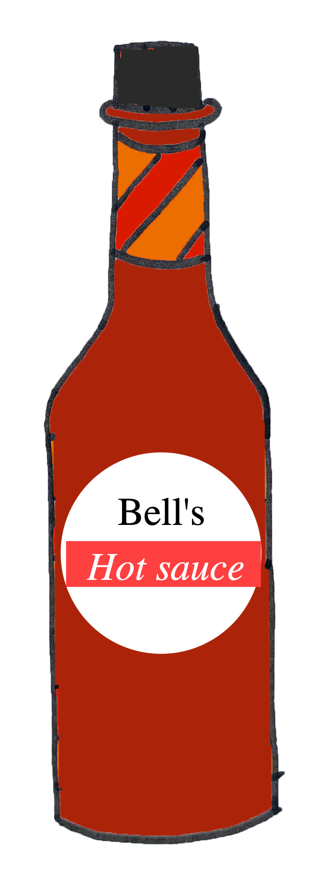
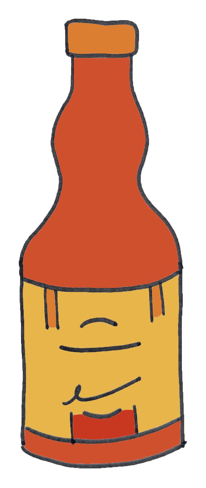
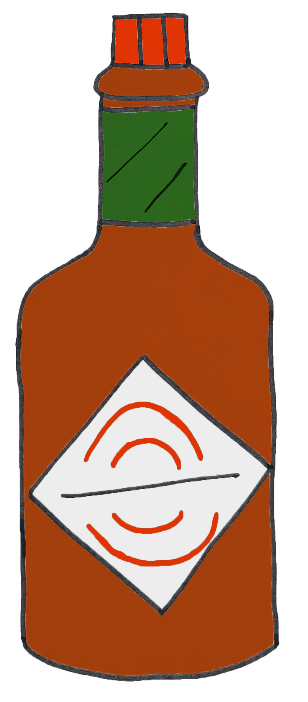
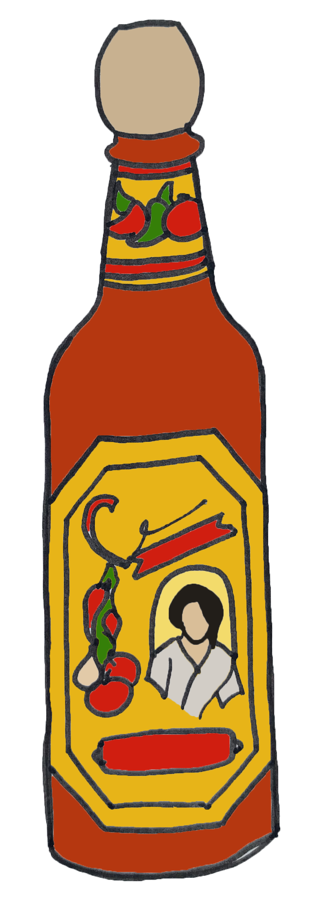

Post
Hot sauce power rankings
This hot sauce power rankings was inspired by the LA Times food power rankings. A few notorious examples can be seen here.
Scoville heat units

Bell's Sizzling Hot Sauce – 45 SHUs
Shout out to Bell's hot sauce: the spice is nice! Bell's is lovingly brewed in small batches in a small factory in Queens, NY. With fresh habanero and ghost peppers, Bell's is the hot sauce I reach for most often.
Frank’s RedHot Sauce – 450 SHUs
Frank’s RedHot is a true classic, dating back to the early 1900s in Louisiana. It is also credited as a key ingredient in the original Buffalo wing sauce, created in Buffalo, NY.
Now, you’ll see Frank’s in supermarkets across the globe and on tabletops in your local chain restaurants. It is undoubtedly tasty, with a simple, aged cayenne pepper recipe that is timeless.
This hot sauce will serve as a baseline, coming in at just 450 SHUs on the Scoville scale. We all know and love Frank’s, so it is a great comparison for the ungodly heat in the later sauces…
Tabasco Hot Sauce – 2,500 SHUs
Another household staple (at least in mine) is Tabasco Brand hot sauce. They make a variety of new flavors, branching out from their original recipe, but the original is truly special.
Tabasco can bring a bland meal to life with just a few small dashes. Just three ingredients go into this sauce – zingy vinegar, red pepper and salt. The proportions work just right for sandwiches, pizza and pretty much anything else.
The heat level is stepped up a bit for Tabasco, reaching a claimed 2,500-5,000 SHUs on the Scoville scale, depending on the batch. This is tolerable to most but is noticeably spicier than Frank’s.
Cholula Hot Sauce – 3,600 SHUs
Cholula is one of our favorite grocery store hot sauces for everyday use. The flavor is unlike anything else we have tried and the heat level is respectable. It is also affordable and has a rich history as part of a tequila chaser in Mexico.
The heat moves up a bit from Tabasco, meaning Cholula may be some people’s tipping point for heat. We like it hot, so this is nothing crazy for us PepperGeeks, but for a hot sauce you can pick up at Stop & Shop, Cholula has a decent bite.
Cholula brings a respectable heat at around 3,600 SHUs on the Scoville scale. For restaurant tabletop hot sauces, this is about as hot as you’ll see. However, we’re only just getting started with the limits of spice…
Dawson’s Original Hot Sauce – 82,000 SHUs
 As things heat up, the brands become less well-known. However, Dawson’s creates some of the most delectable hot sauces out there, and their ‘Original’ sauce is among them. We find some of the best sauces are simple, and this one is no exception.
As things heat up, the brands become less well-known. However, Dawson’s creates some of the most delectable hot sauces out there, and their ‘Original’ sauce is among them. We find some of the best sauces are simple, and this one is no exception.
The distinction here is that this hot sauce uses habanero peppers as the first ingredient. If you know about habaneros, you’ll understand why this brings significantly more heat than the first few sauces on our list.
Dawson’s takes a significant leap up on the Scoville scale. This hot sauce comes in around 82,000 SHUs on the scale, meaning it is significantly hotter than the stuff you can buy at the store. It also comes at a much higher price tag, but we think it is well worth the price for the premium ingredients and the beautiful design and appearance.
Da Bomb Beyond Insanity – 135,000 SHUs
Well-hated in the hot sauce community for years and years, Da Bomb is notorious for its aggressive heat. I’ve tried it, and it is just as bad-tasting and brutally spicy as all the unfortunate Hot One’s guests make it seem.
The reason for this is that the ingredients in Da Bomb are more an effort to shock you, while the flavor is just an afterthought. The heat comes from habaneros, but also pepper extract, which gives it an almost metallic, battery-acid flavor.
It doesn’t need to be in anyone’s fridge. But they’ve probably sold millions of the dang bottles. Oh well, thankfully there are other sauces that are even hotter, but with delicious flavor, too.
Da Bomb comes in at a relatively tame 135,000 SHUs on the Scoville scale, though we think that it tastes hotter. This can happen, since the Scoville scale doesn’t always tell the whole store for how a hot sauce’s heat level feels. Da Bomb burns on the same level as the Last Dab hot sauces, though those claim to be 10X hotter on the Scoville scale. *shrug*
Dingo Widow Maker – 682,000 SHUs
Debuting on season 11 of Hot Ones, the Widow Maker took the number 9 spot on the spicy wing lineup. This means it is undoubtedly spicy to the everyday person, but it only marks the halfway point on our hot sauce Scoville scale list.
Dingo Sauce Co. is based in Western Australia and makes a variety of hot sauces. The aptly named ‘Widow Maker’ hot sauce uses a blend of 6 different varieties of superhot peppers as the first ingredient. This means serious heat.
However, the sauce also incorporates complementary flavors like lime, garlic and brown sugar, making this a sauce some might actually use. We like the sauces that offer both heat and flavor.
Dingo’s Widow Maker comes in at an impressive 682,000 SHUs on the Scoville scale, making it one of the hottest all-natural hot sauces in our collection. Without the use of pepper extract, it’s not common to see Scoville ratings this high.
Dragon In The Clouds – 1,000,000 SHUs
 Moving into the 7-digit SHU level of heat, the unique Hot Ones / 88 Rising collaboration brought us Dragon In The Clouds in 2019. This hot sauce is unique, but also bizarre and difficult to pair with food. It is brutally spicy thanks to Ghost chiles, and has a bitter, citrusy zest from yuzu.
Moving into the 7-digit SHU level of heat, the unique Hot Ones / 88 Rising collaboration brought us Dragon In The Clouds in 2019. This hot sauce is unique, but also bizarre and difficult to pair with food. It is brutally spicy thanks to Ghost chiles, and has a bitter, citrusy zest from yuzu.
Dragon In The Clouds hot sauce is no joke. Though we have been unable to find an official heat level for the sauce, we assume it comes in right around the 1 million SHU mark on the Scoville scale. Given that the first ingredient is ghost pepper, the sauce most likely hits that mark. It sure feels like it does…
Mad Dog 357 Gold Edition – 1,000,000 SHUs
Mad Dog is a spicy food phenomenon. Hailing from Massachusetts, David Ashley started creating his sauces and culinary horrors in 1991. You know you’re dealing with fiercely spicy food when the company name alludes to a firearm (357 magnum).
The Gold Edition hot sauce comes with a replica shell, just for good measure. This sauce actually uses Mad Dog’s own Plutonium No.9 Extract (more on this later…) to pump additional heat into the sauce. As stated before, we’re not a fan of extract hot sauces.
However, unless you’re using rare and difficult-to-source super-hot peppers as a primary ingredient, it will be hard to crack the 1M SHU mark without using pepper extract. Mad Dog has some of the hottest sauces on the market, but they also claim to have some flavor-first hot sauces with mild heat as well.
Mad Dog 357 Gold Edition touts a 1,000,000 SHU Scoville rating. This makes the sauce unbearably hot, created for those who love to chase the heat in every meal. This bottle could last a lifetime in our refrigerator without ever going empty.
The Last Dab Triple X – 2,000,000+ SHUs
 Now this is how you do a super-spicy hot sauce. The Last Dab Triple X hot sauce is meant to be used, not just to be a novelty. The strong cumin-forward flavor is addictive, and can actually be paired well with foods. We have tasted it many times, and we now have more than one bottle in our current inventory.
Now this is how you do a super-spicy hot sauce. The Last Dab Triple X hot sauce is meant to be used, not just to be a novelty. The strong cumin-forward flavor is addictive, and can actually be paired well with foods. We have tasted it many times, and we now have more than one bottle in our current inventory.
This is the sweet spot if you love super-spicy food, though we have some other super-hot sauces we love equally. Simply put, kudos to Hot Ones and Smokin’ Ed Currie for crafting an insanely hot sauce that actually tastes great.
The Last Dab Triple X comes in at a whopping 2,000,000+ SHUs on the Scoville scale. This is thanks to the Pepper X Pepper variety bred by Ed Currie of the Puckerbutt Pepper Company. He’s the guy responsible for creating the Carolina Reaper pepper. You know, the hottest pepper on the planet. NBD.
Satan’s Blood – 800,000 SHUs
And now we’ve entered ‘are you kidding me?’ territory. This is only loosely described as a hot sauce since the ingredients consist of pepper extract, an emulsifier, and vinegar. Satan’s Blood is not intended to be used to enhance the flavor of food. The only goal was to make food fiery hot.
I would have to say that they succeeded.
I think the reason I bought it was the sinister packaging, coming in a bottle that looks like an evil witch’s poison vial.
Yes, I have tasted this substance. It was not pleasant. It was hardly even food. But it was probably the hottest, most concentrated spicy food I’ve ever eaten. This is why I included an asterisk next to the Scoville rating…
Though Satan’s Blood has been officially rated at 800,000 SHUs on the Scoville scale, the experience is much more intense than previously mentioned hot sauces. This is almost entirely made of pepper extract, a concentration of capsaicin in liquid form. No flavor, just heat.
Mad Dog 357 Plutonium No.9 – 9,000,000 SHUs
The warnings are plastered across the packaging of Mad Dog 357’s Plutonium No. 9 ‘hot sauce’ (if you can call it that). Coming in at a whopping 9,000,000 SHUs, this can hardly be considered an actual condiment.
In fact, it states on the Amazon page that this is not to be consumed directly, but rather used only as a food additive. Not just this, but the stuff might need to be heated to 140°F just to get it out of the bottle.
No thanks. This stuff is just too much for me. I have not bothered buying this ‘hot sauce,’ both because it is certainly intolerable to eat, but also because the price is pretty wild. I guess extracting pure capsaicin is a costly process.